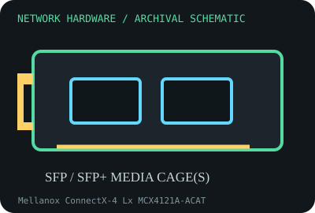

[ MODEL-SPECIFIC NETWORK HARDWARE RECORD ]
Mellanox ConnectX-4 Lx MCX4121A-ACAT
Dual-port SFP28 PCIe adapter for Ethernet rates up to 25 Gb/s per port. This record identifies the stated model/revision; visually similar products may use different silicon or firmware.

IDENTIFICATION: Verify the full label, board revision, vendor/device IDs and regulatory markings before selecting firmware or drivers. Nominal PHY/link rates below are not measured application throughput.
Specifications and compatibility
| Subcategory | 10 Gigabit and server adapters |
|---|---|
| Exact model | Mellanox ConnectX-4 Lx MCX4121A-ACAT |
| Interface and connector | PCIe 3.0 x8 host; two SFP28 cages compatible with supported 25/10/1 GbE media configurations. |
| Controller / PHY / radio | NVIDIA/Mellanox ConnectX-4 Lx EN ASIC; actual speed, auto-negotiation and media support depend on firmware, transceiver/DAC and link partner. |
| Nominal throughput (not a test) | Up to 25 Gb/s per port on supported SFP28 links (50 Gb/s aggregate nominal); not evidence of application throughput. PCIe, traffic pattern and host may limit it. |
| Measured throughput | Not benchmarked in this archive. Report sustained and packet-rate results separately with firmware, driver, optics, host, switch and test setup. |
| Driver / OS / firmware | Linux mlx5_core with matching firmware is standard; NVIDIA/Mellanox OFED and Windows support are release/platform-specific. Use NVIDIA Firmware Tools and the exact board ID instructions for firmware updates. |
| Compatibility | Requires PCIe x8, supported SFP28 or compatible lower-rate module/DAC, and adequate cooling. Confirm link mode, cable reach and switch port support before installation. |
| Variant warning | MCX4121A-ACAT is a dual-port Ethernet (EN) 25GbE model; do not confuse with VPI, single-port, Secure Host, or other MCX41xx variants. Board PSID and firmware image must match exactly. |
Variant and operating notes
MCX4121A-ACAT is a dual-port Ethernet (EN) 25GbE model; do not confuse with VPI, single-port, Secure Host, or other MCX41xx variants. Board PSID and firmware image must match exactly.
Linux mlx5_core with matching firmware is standard; NVIDIA/Mellanox OFED and Windows support are release/platform-specific. Use NVIDIA Firmware Tools and the exact board ID instructions for firmware updates.
Throughput policy: vendor/standard rates are labeled nominal. This archive includes no measured benchmark for this specimen; do not interpret a link rate or aggregate port capacity as sustained payload performance.
Archival, ESD and preservation notes
Keep the PSID, FRU, serial, firmware, port MACs and transceiver inventory with the card. Cap optical cages, avoid fiber eye exposure, and store both card and removable modules in ESD-safe packaging.
Preserve the exact model/revision, serial/date code, firmware and driver versions, accessories, condition, source provenance, and source-document revision. Never retain access credentials or undocumented secrets in the public catalog.
Manufacturer and standards sources
- NVIDIA ConnectX-4 Lx Ethernet adaptersManufacturer or standards reference; match the complete model/revision before applying specifications.
- NVIDIA firmware tools and downloadsManufacturer or standards reference; match the complete model/revision before applying specifications.
- IEEE 802.3 Ethernet standardsManufacturer or standards reference; match the complete model/revision before applying specifications.
Source coverage can be family-level; manufacturer documentation for the exact part number and hardware revision takes precedence. Standards describe protocol behavior, not a promise of real-world performance.